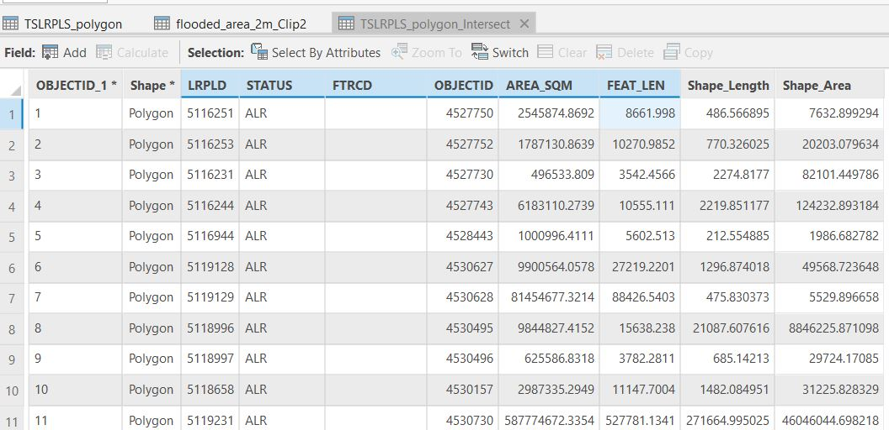

Lab 5 Mapping suitability and sea level rise
Written by Hana Travers-Smith
Lab Overview
Climate change is rapidly altering the stability of the Earth’s cryosphere. Over the next century thawing glaciers and ice sheets are expected to result in sea level rise between 2-5 m. This is a concern for many coastal environments and communities.
In this lab you will use a digital elevation model (DEM) covering the metro Vancouver region to map areas at risk of flooding during an extreme weather event under current and future conditions, assuming 2.96 m of sea level rise by the year 2100. In particular, we will focus on mapping the intersection of high risk areas with critical agricultural land in the Fraser Delta region. In this assignment, you will produce a map to assess regions where agricultural land can be developed safely from flood hazards.
In partnership with the Delta community, the CALP research group at UBC produced the following report on projected sea level rise and adaptation strategies for this region, which can be found here:
https://www.fraserbasin.bc.ca/_Library/CCAQ_BCRAC/bcrac_delta_visioning-policy_4d.pdf

Learning Objectives
Understand how to use basic spatial analysis tools (Clip, Intersect, Buffer)
Experiment with visualization of spatial layers
Conduct a suitability analysis to determine where to expand new agricultural land
Deliverables
Answers to 13 questions
Map showing suitability of agricultural areas for future development
Data
Digital Elevation Model of the Fraser Valley: FraserValleyDEM.tif
Polygon of study area: fraserValley_studyarea.shp
Polyline of coastline: coastline.shp
Polygon shapefile of agricultural land from https://catalogue.data.gov.bc.ca/dataset/alc-alr-polygons: ag_polys.shp
Task 1: Mapping flood hazard
Peak water levels during a storm are expected to reach 2.96m above current sea level by 2100 (CALP, 2012). In this lab, we will assess flooding in the delta region to inform future land use planning. For now, we will map flood hazard assuming sea walls and dyke infrastructure is not in place, and there are no obstructions blocking the flow of water over the land.
Q1: From the CALP report (Section 2), briefly list the 4 primary drivers of sea level rise?
Step 1: Set up a new Map Project and import the DEM into ArcGIS Pro. First we will identify cells in the DEM that are below the projected high water line of 2.96m. Open the FraserValleyDEM.tif in ArcGIS Pro. Navigate to Analysis > Tools > Reclassify (Spatial Analyst tools).

Click the Classify button and in the pop-up window set the number of classes to 2 and the method to Manual Interval. Set the Upper value to 2.96 and hit OK. In the Output raster field give the new raster a descriptive name (ie DEM_reclass_2m) and save it to the default GDB.
HINT: Giving concise and descriptive names to your spatial data will make things easier to keep track of later on! Note that names should not include periods or spaces

Cells in the resulting raster with a value <2.96 will be assigned a new value of 1 and cells >2.96 will be assigned a value of 2.
Q2. What is the spatial resolution of the DEM?
Step 2: Next, we will convert the reclassified raster into polygon features. Navigate to the Raster to Polygon Tool (Conversion Tools). Set the input raster to the reclassified raster (DEM_reclass_2m) from the previous step and name the features flood_2m_polys and save to the default GDB. Make sure the Simplify Polygons box is checked.
Q3: What would happen if we did not simplify the polygon features? Why might we want to produce simplified polygon features?
Step 3: Open the attribute table for the polygon features. The Gridcode variable corresponds to the cell values from the input raster. In this case we are only interested in keeping polygons representing low elevation cells. We will delete high elevation polygons by selecting features with gridcode = 2
Click Select by Attributes and use the drop-down menus to generate the following expression:
Where, gridcode, is equal to, 2
Click the Delete Selection button to delete the selected polygons.

Step 4: Examine the resulting polygon shapefile. You will notice that there are lots of small isolated polygons, not adjacent to the coastline. We will remove these by intersecting the flooded areas features with a polyline representing the coastline.
Open Coastline.shp. Navigate to Map > Select by Location. Set the Input Features to the flooded areas polygons and the Selecting Features to the coastline layer. Set the Relationship to Within a distance. Set the distance to 30m. Make sure the Invert spatial relationship box is checked. This will select polygons that are further than 30m from the coast. Click Apply.
Delete the selected features.
Q4: Describe how you would change the selection parameters (Relationship & Distance) if you wanted to select flooded areas that are within 100m from the coastline?
You should now have polygon features that look like the following:

Step 5: Zoom into the polygons. You will notice that even though we used simplified polygons, the edges are still quite jagged and have many small holes. Next, we will smooth these polygons for better visualization and create more realistic shapes.
First, we will reduce the jagged edges in the polygons. Navigate to the Buffer tool. Create a 30m buffer around the flood_2m_polys layer. Set the Dissolve type to Disolve all output features to a single feature. Name the output flood_2m_30mBuffer Click Run.
Q5: Describe what happens if the buffer is NOT dissolved. Which would be better (dissolved or not dissolved) if you wanted to calculate the total flooded area in km2 and why?
Next, we will clip the flooded polygons to land area using the FraserValley_studyarea.shp.
Import FraserValley_studyarea.shp. Navigate to the Clip tool and set the Input features to the flood_2m_30mBuffer layer and the Clip features to the FraserValley.shp. Save the output as flood_2m_30mBuffer_Clip. Click Run.
Task 2: Intersection
In this task we will intersect flooded areas with with land suitable for agricultural development to understand how sea level rise might impact future land use planning.
Q6: The figure below illustrates how the intersect tool works. Describe in one sentence how the output features are generated from the inputs.

Step 1:Load the flooded_2m_30mBuffer_Clip layer in ArcPro. Load the agricultural land shapefile, ag_polys.shp.

Step 2: Open the Intersect tool.
- Input Features: flooded_2m_30mBuffer_Clip and ag_polys
- Attributes to Join: All attributes except feature IDs
- Output Name: flood_ag_intersect
Open the attribute table of the new intersect output, and the layers you used as inputs. Notice how the attributes of both the original input layers are retained in the new intersected features.
Q7: What layer did the STATUS and AREA_SQM attributes originally come from?

Step 3: Next, we will calculate the flooded area within each agricultural polygon.
First, create a new attribute in flood_ag_intersect. Open the layer attribute table and click the Add button beside Field:

In the Fields table name the new field FloodedArea, set the data type to Double and then click Save (at the top of map window).

You will now have a blank field in the attribute table.
In the attribute table, right click on the Int_Area field > Calculate Geometry. In the Property drop-down select Area and select Square meters as the Area Unit. Click OK.
Task 3: Calculating & visualizing suitability
In this task, we will calculate NON-flooded area in each agricultural polygon to determine which regions may be most suitable to develop new agricultural land.
Step 1: Create a new attribute in flood_ag_intersect, set it to type = Double and name it SuitableArea. Open the attribute table and open the Calculate Field tool (beside the Add Field tool). Use the fields list and the math symbols to calculate SuitableArea as Area of the agriculture polygon - flooded area.

Q10: What is the LRPLD number of the polygon feature with the MOST suitable land for future agriculture? What percentage of the total area is suitable?
Step 2: Create another new attribute ProportionFlooded and use Calculate Field to calculate the proportion of each agricultural polygon that is flooded. Your final values should range between 0 and 1. Make sure the data type for the attribute is Double so it can store decimal values.
Q11: What expression did you use to calculate ProportionFlooded? (Copy it from the Calculate Field tool).
Step 3: Next, we will standardize the SuitableArea attribute so its values range from 0 to 1 (the same range as the ProportionFlooded.
Create a new attribute SuitArea_Std and use the following equation to calculate it:
SuitArea_Std = (SuitableArea - Minimum) / (Maximum - Minimum)
Where Minimum is the minimum value of SuitableArea, and Maximum is the Maximum value of suitableArea.
Step 4: Next, we will create a Suitability Score that combines the ProportionFlooded attribute and the SuitArea_Std attribute. Create a new attribute to represent a final Suitability Score and set the Data Type to Double.
Use the equation below to create a Suitability Score based on the proportion of non-flooded land and the total suitable area (standardized). The final values will range from 0 (least suitable) to 1 (most suitable):
((1-ProportionFlooded) + SuitArea_Std)/2
Q12: What is the average suitability score?
Step 5: Next, we will join the new attribures from the flood_ag_intersect layer to the original ag_polys shapefile so that we can visualize the Suitability Score within the agricultural polygons.
Right click on the ag_polys layer in the Contents pane > Joins and Relates > Add Join.
- Join Features: flood_ag_intersect
- Join Attribute: LRPLD
- Un-check Keep all target features
Step 6 Change the Symbology of the ag_polys layer to reflect the Suitability Score. Finally, create a map with the following elements and include it in your final deliverables:
- Agricultural polygons color coded by suitability score
- Title
- North arrow
- Scale bar
- Legend